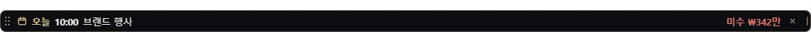

프리랜서·현장직을 위한 달력
일정과 돈을
일정과 돈을
한 달력에서
언제 어디서 일했는지, 얼마를 받았고 얼마를 못 받았는지. 스파클달력이 달력 한 장에 정리해 드려요. 휴대폰과 PC가 같은 계정으로 이어져요.
휴대폰 앱 무료 · 프리미엄 30일 무료 체험
PC 프로그램은 PC에서 calendar.sparklekorea.com 을 열어 받아 주세요.


언제 어디서 일했는지, 얼마를 받았고 얼마를 못 받았는지. 스파클달력이 달력 한 장에 정리해 드려요. 휴대폰과 PC가 같은 계정으로 이어져요.
일정을 적으면 돈 계산은 스파클달력이 해요.


같은 계정으로 로그인하면 일정·가계부·채팅이 그대로 이어져요. 휴대폰에서 고치면 PC에도 바로.
큰 달력에서 한 달을 한눈에 보고, 마우스로 바로 만들고 옮겨요.

한 해 수입, 받을 돈, 거래처별 리포트를 PC에서 정리해요.
프로그램을 열지 않아도 바탕화면 위젯과 작업 표시줄 위 한 줄 달력으로 오늘 일정을 봐요.


새로 나온 프로그램이라 윈도우가 아직 잘 몰라서 보여 주는 안내예요. 이 페이지에서 받은 파일이면 추가 정보를 누른 뒤 나오는 실행 버튼으로 설치하시면 돼요.
찾는 내용이 없어요. 다른 낱말로 검색해 보세요.
휴대폰 앱과 PC 프로그램 모두 무료로 쓸 수 있어요. 일정·달력·가계부·채팅·위젯은 무료예요. 자동 출퇴근, 인건비 자동 계산, 세금 정산, 거래처별 정산·리포트, 클라우드 자동 백업, 태양 궤적 AR 은 프리미엄이에요.
처음 로그인한 날부터 30일 동안 프리미엄 기능을 모두 써 볼 수 있어요. 체험이 끝나도 적어 둔 일정·기록은 그대로 남고, 프리미엄 기능만 잠겨요.
네. 결제는 휴대폰 앱(Google Play)에서 하고, 같은 계정으로 로그인한 PC 프로그램에서도 프리미엄이 열려요.
일정에 일하는 장소를 적어 두면, 그날 그 장소 근처(약 300m 안)에 도착할 때 출근이, 떠날 때 퇴근이 자동으로 찍히고 알림이 와요. 휴대폰 위치 권한을 항상 허용으로 두어야 해요.
네. 앱을 열지 않아도 휴대폰이 뒤에서 위치를 보고 도착한 시각에 출근을 찍어요. 상단 알림줄에 "장소 자동 근무 기록"이 보이면 켜져 있는 거예요.
휴대폰은 배터리를 아끼려고 많이 움직였을 때만 위치를 알려 줘요. 장소에 와서 가만히 있는 상태에서 일정을 만들거나 장소를 고치면, 앱을 열었을 때 확인해서 그 시각으로 찍힐 수 있어요. 일정을 눌러 출근 시간을 직접 고칠 수 있어요.
그대로 이어서 계산해요. 25일 07:00 출근, 26일 08:00 퇴근이면 25시간으로 기록돼요.
처음 장소에 도착할 때 출근, 마지막 장소를 떠날 때 퇴근으로 찍혀요.
일정에 시급·일급 같은 단가를 적어 두면 근무 시간으로 자동 계산돼요. 하루 12시간을 넘긴 시간은 초과 수당으로 따로 셀 수 있어요.
네. 프리랜서는 원천징수(3.3%)를 뺀 금액, 사업자는 부가세(10%)를 더한 금액으로 정산해요.
달력 위에 입금 완료·미입금 합계가 나오고, 거래처별로 모아 정산 내역서를 공유할 수 있어요.
같은 계정(카카오·구글)으로 로그인하면 일정·가계부·채팅이 같은 서버에 저장돼요. 한쪽에서 고치면 다른 쪽에도 바로 보여요.
프로그램이 알아서 받아 두었다가, 종료하거나 알림을 누르면 설치돼요. 다시 다운로드할 필요 없어요.
설정 → PC 프로그램 → 알림 위치에서 오른쪽 위를 고르세요. 휴대폰과 연결 같은 윈도우 알림과 겹치지 않아요.
새로 나온 프로그램이라 나오는 안내예요. 추가 정보 → 실행을 누르면 설치돼요.
네. 설정 → PC 프로그램에서 바탕화면 달력 위젯과 작업 표시줄 위 한 줄 달력을 켤 수 있어요.
친구·그룹·일정 대화방에서 글, 사진, 파일, 연락처, 일정을 보낼 수 있어요. 사진은 크게 보고 저장·공유할 수 있어요.
같은 계정으로 로그인하면 일정이 그대로 이어져요. 클라우드 백업(설정 → 백업)에 올려 둔 것은 언제든 불러올 수 있어요.
지금은 안드로이드(Google Play)와 윈도우 10·11을 지원해요. 아이폰은 준비 중이에요.